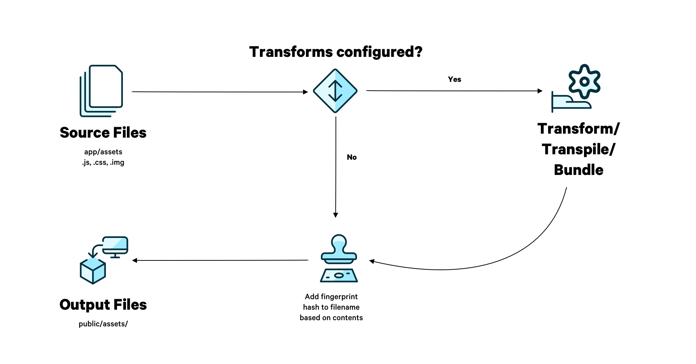

DO NOT READ THIS FILE ON GITHUB, GUIDES ARE PUBLISHED ON https://guides.rubyonrails.org.
The Asset Pipeline
This guide explains how to handle essential asset management tasks.
After reading this guide, you will know:
- What the
Railsasset pipeline does. - What Propshaft is and how it serves CSS, JavaScript, and other assets.
- How Propshaft integrates with other libraries which transpile and bundle JavaScript and CSS.
- The techniques to deliver assets in development and production.
- How to use a CDN to deliver production assets.
What is the Asset Pipeline?
The Rails asset pipeline is responsible for transforming, caching, and serving static assets such as JavaScript, CSS, and image files.
The asset pipeline takes a source file, adds a fingerprint (also called a
digest) to the filename, and places it in the public/assets/ folder for
delivery. It may also preprocess source file before fingerprinting — for
example, CSS and JavaScript files may be transpiled and bundled.

Here's an example of how the asset pipeline computes the path to a stylesheet:
<%= stylesheet_link_tag "application", media: "all" %>
This will render the following HTML tag:
<link rel="stylesheet" href="assets/application-55f8f81.css" media="all">
The above example demonstrates a fingerprint or digest in the filename
(55f8f81). This is calculated by running the file's contents through acryptographic hash function
— hence, when its contents change, the filename also changes. This allows for an
aggressive caching strategy as stale assets will never be served.
The core component of the Rails asset pipeline isPropshaft. Propshaft is responsible
for reading source assets, fingerprinting them, and placing them in the
public/ folder. It DOES NOT do any transpiling or bundling. Other gems
need to be plugged into Propshaft for this functionality. SeeManaging CSS and JavaScript Files and Dependencies below.
NOTE: The advent of HTTP/2 has reduced the need for bundling JavaScript and CSS into a single file. Multiple files can be served in parallel over a single connection, meaning these files can be served as-is with minimal performance overhead.
Propshaft
Propshaft is included in all new Rails
applications. It can be excluded using --skip-asset-pipeline flag:
$ rails new app_name --skip-asset-pipeline
NOTE: Before Rails 8, the asset pipeline was powered bySprockets. You can read about theSprockets Asset Pipeline in previous versions of the Rails Guides. A migration guideis available here.
Propshaft expects your assets to be in a browser-ready format — like plain CSS, JavaScript, or preprocessed images (like JPEGs or PNGs). Its job is to fingerprint and serve those assets efficiently and securely. In this section, we’ll cover the main features of Propshaft.
Load Paths
Propshaft, by default, reads source files from the below directories which are known as the load paths:
app/assets/**/*lib/assets/**/*vendor/assets/**/*
WARNING: Files within the root assets directories (for example:
app/assets/image.jpg) will not be processed. They need to be within a
subdirectory such as: app/assets/images/image.jpg.
WARNING: Filenames must be unique across all load paths. For example, if you
have a file called application.css under both app/assets/stylesheets/ and
vendor/assets/stylesheets/, then one of the files will be overwritten.
All files within the load paths will be processed by Propshaft and placed in the
public/assets/ folder, ready to be served.
Modifying Load Paths
You can specify additional loads paths for Propshaft:
# config/initializers/assets.rb
Rails.application.config.assets.paths <<
Rails.root.join("lib", "legal", "docs")To overwrite the load paths completely, you'll need to use the
after_initialize hook:
# config/initializers/assets.rb
Rails.application.config.after_initialize do
Rails.application.config.assets.paths = [
Rails.root.join("app", "assets", "builds"),
Rails.root.join("app", "assets", "fonts"),
Rails.root.join("app", "assets", "images")
]
endExclude specific directories from the load path by adding them to
config.assets.excluded_paths. This is useful if, for example, you’re using
app/assets/stylesheets as input to a compiler likeDart Sass, and you don’t want these files to be part
of the asset load path.
config.assets.excluded_paths =
[Rails.root.join("app", "assets", "stylesheets")]Bypassing the Fingerprinting Step
If you need to reference files that refer to each other — like a JavaScript file
and its source map — and want to avoid the fingerprinting process, you can
pre-digest these files manually. Propshaft recognizes files with the pattern
-[digest].digested.js as files that have already been digested and will
preserve their stable file names.
For example: the file app/assets/javascript/utils-nmk3453.digested.js will
produce the output file: public/assets/utils-nmk3453.digested.js.
Referencing Assets
Propshaft generates a manifest JSON file (public/assets/.manifest.json) which
maps the files' source name to its fingerprinted path when processing the
assets. Rails then hooks into Propshaft to define a number of helper methods to
reference and link assets in ERB code using this manifest.
Stylesheets
Link a specific stylesheet using:
<%= stylesheet_link_tag "global" %>
which will render:
<link rel="stylesheet" href="/assets/global-7a3f4f13.css">
All stylesheets in the app/assets/ directory can be linked using:
<%= stylesheet_link_tag :app %>
This will render a tag in alphabetical order by name for every
stylesheet in your app/assets/ directory.
<link rel="stylesheet" href="/assets/_reset-76a913c3.css">
<link rel="stylesheet" href="/assets/application-71d3eebf.css">
<link rel="stylesheet" href="/assets/fonts-mhnk3214.css">
You can also link all stylesheets within your load paths:
<%= stylesheet_link_tag :all %>
This will also render tags in alphabetical order by name for every
stylesheet.
<link rel="stylesheet" href="/assets/_reset-76a913c3.css">
<link rel="stylesheet" href="/assets/application-71d3eebf.css">
<link rel="stylesheet" href="/assets/dropdown-45li1wdf.css">
<link rel="stylesheet" href="/assets/fonts-mhnk3214.css">
NOTE: Ensure your CSS is loaded in the correct order for any cascading logic. If alphabetical order is not suitable, link each stylesheet individually or consider bundling your files. See theManaging CSS and JavaScript Files and Dependencies below.
When usingTurbo (which is included in Rails by
default), add the data-turbo-track attribute. Thistracks the asset between page loads
and reloads it if it changes.
<%= stylesheet_link_tag "application", "data-turbo-track": "reload" %>
JavaScript
Include JavaScript using the javascript_include_tag helper method.
<%= javascript_include_tag "application" %>
<script src="/assets/application-5bcb24fe.js"></script>
This mechanism only works for single, isolated JavaScript files. Rails uses aJavaScript import map by default to simplify the management of multiple JavaScript files. See the section onusing an import map below.
Images and Files
Load images using the image_path helper:
<%# Load an image file located at <code>app/assets/images/profile_pic.jpg</code> %>
<%= image_tag image_path("profile_pic.jpg") %>
<%# Output: %>
<img src="/assets/profile_pic-1cf07598.jpg">
All other types of files can be referenced with asset_path:
<%# Link to PDF file located at <code>app/assets/files/report.pdf</code> %>
<%= link_to asset_path("report.pdf") do %>
Download report
<% end %>
<%# Output: %>
<a href="/assets/report-b3a2d7ac.pdf">
Download report
</a>
Define assets in sub-folders using:
<%# Link to PDF file located at <code>app/assets/files/statements/april.pdf</code> %>
<%= link_to asset_path("statements/april.pdf") do %>
Download statement
<% end %>
<%# Output: %>
<a href="/assets/statements/april-b3a2d7ac.pdf">
Download statement
</a>
Assets within CSS and JavaScript
ERB helpers aren't available inside CSS and JavaScript files so Propshaft offers alternative ways to reference files in these contexts.
Link a file within CSS using the url helper:
background: url("/bg/pattern.svg");
This will be rendered as:
background: url("/assets/bg/pattern-2169cbef.svg");
In JavaScript, Propshaft provides a RAILS_ASSET_URL macro.
export default class extends Controller {
init() {
this.img = RAILS_ASSET_URL("/icons/trash.svg");
}
}
This will transform into:
export default class extends Controller {
init() {
this.img = "/assets/icons/trash-54g9cbef.svg";
}
}
Subresource Integrity (SRI)
Propshaft supportsSubresource Integrity (SRI) to help protect against malicious modification of assets.
Propshaft adds an integrity HTML attribute which defines a cryptographic hash
based on the file's contents. The browser then verifies this hash against the
downloaded file to ensure it hasn't been tampered with. This technique is
particularly useful whenserving assets from an external source such as a CDN.
Enabling SRI
To enable SRI support, configure the hash algorithm in your Rails application:
config.assets.integrity_hash_algorithm = "sha384"Valid hash algorithms are:
sha256- SHA-256 (most common)sha384- SHA-384 (recommended for enhanced security)sha512- SHA-512 (strongest)
Using SRI in your views
Once configured, you can enable SRI by passing the integrity: true option to
asset helpers:
<%= stylesheet_link_tag "application", integrity: true %>
<%= javascript_include_tag "application", integrity: true %>
This generates HTML with integrity hashes:
<link
rel="stylesheet"
href="/assets/application-abc123.css"
integrity="sha384-xyz789..."
/>
<script
src="/assets/application-def456.js"
integrity="sha384-uvw012..."
></script>
WARNING: SRI only works in secure contexts (HTTPS) or during local development. The integrity hashes are automatically omitted when serving over HTTP in production for security reasons.
Managing CSS and JavaScript Files and Dependencies
Rails provides a number of gems that plug into Propshaft to help manage CSS and JavaScript files, and optionally transpile and bundle them.
In this section, we'll discuss the following gems:
*importmap-rails][]: Generates a [JavaScript Import Map.
-
[
jsbundling-rails][]: Provides integration with a number of JavaScript bundlers. -
[
cssbundling-rails][]: Simplifies the installation of supported CSS frameworks and processors.
These gems augment Propshaft by processing the source files before handing them over to Propshaft for fingerprinting and delivery.
JavaScript Import Map
AJavaScript import map
is the default mechanism to deliver JavaScript in Rails apps. The functionality
is provided by the [importmap-rails][]
gem.
An import map allows JavaScript files to be delivered separately without
bundling and still be able to reference each other. It is a JSON object which
defines the mapping between the text in the module specifier in an import
statement, and the path to the actual file.
Consider the below JavaScript files:
// utils.js
export class Utils {
constructor() {
console.log("I'm a utility")
}
}
// application.js
import { Utils } from "utils"
new Utils()
These can be delivered to the browser without bundling using an import map:
<script type="importmap">
{
"imports": {
"application": "/assets/application.js"
"utils": "/assets/utils.js"
}
}
</script>
<script type="module">import "application"</script>
importmap-rails provides the mechanism to generate the import map JSON object
and load the JavaScript files in the HTML document, while leaving fingerprinting
and delivery of the actual files to Propshaft.
Declaring Dependencies with pin
importmap-rails dependencies are declared in a config/importmap.rb file.
pin "application"
pin "@rails/actioncable", to: "actioncable.esm.js"
pin "@rails/activestorage", to: "activestorage.esm.js"
pin_all_from "app/javascript/controllers", under: "controllers"The pin method creates a mapping from the canonical import value to the name
of the fingerprinted JavaScript file. importmap-rails uses the Propshaft
manifest to correctly reference the fingerprinted paths.
In the above example, actioncable.esm.js and activestorage.esm.js are
provided by their respective gems.
To use an npm package, you'll need to vendor it using the /bin/importmap pin
command. This will download the package from a CDN and save it in your vendor/
directory, which you can then check into source control. Further information is
available in theimportmap-rails Readme.
pin_all_from is shorthand for all the files in a particular folder so they
don't have to be referenced individually.
Loading Import Mapped JavaScript in HTML
importmap-rails provides a javascript_importmap_tags helper which renders
all the required tags to load the files declared in config/importmap.rb.
In your application's , add:
<%= javascript_importmap_tags %>
Based on the above config/importmap.rb file, the below HTML will be rendered:
<script type="importmap" data-turbo-track="reload">
{
"imports": {
"application": "/assets/application-6ffc895c.js",
"@rails/actioncable": "/assets/actioncable.esm-e0ec9819.js",
"@rails/activestorage": "/assets/activestorage.esm-81bb34bc.js",
"controllers/application": "/assets/controllers/application-3affb389.js",
"controllers/hello_controller": "/assets/controllers/hello_controller-708796bd.js",
"controllers": "/assets/controllers/index-ee64e1f1.js"
}
}
</script>
<link rel="modulepreload" href="/assets/application-6ffc895c.js">
<link rel="modulepreload" href="/assets/actioncable.esm-e0ec9819.js">
<link rel="modulepreload" href="/assets/activestorage.esm-81bb34bc.js">
<link rel="modulepreload" href="/assets/controllers/application-3affb389.js">
<link
rel="modulepreload"
href="/assets/controllers/hello_controller-708796bd.js"
/>
<link rel="modulepreload" href="/assets/controllers/index-ee64e1f1.js">
<script type="module">import "application"</script>
All the files are mapped to their fingerprinted filenames in the import map
object. <link rel="modulepreload"><a href='https://developer.mozilla.org/en-US/docs/Web/HTML/Reference/Attributes/rel/modulepreload'>enhances performance
by preemptively fetching and parsing a JavaScript module.
The application file is imported as the entry point to your JavaScript
application. By default, the entry point will always be application. To change
it, use:
<%= javascript_importmap_tags "entry_point" %>
Additional entry points can be declared using:
<%= javascript_import_module_tag "entry_point" %>
When Should You Use A JavaScript Import Map?
importmap-rails is ideal for Rails applications that:
- Do not require complex JavaScript features like transpiling or bundling.
- Use modern JavaScript without relying on tools like ESBuild.
- Are able to serve assets over HTTP/2.
Bundling and Transpiling JavaScript
If your application's JavaScript requires a build step, use the
[jsbundling-rails][] gem.
It supports a number of bundlers such asBun,esbuild](https://esbuild.github.io/), [rollup.js, andWebpack. See theReadme for further details.
The bundlers are configured to build files from app/javascript/
by default, and the output will be written to app/assets/builds/
where Propshaft will pick it up for fingerprinting and delivery.
Include jsbundling-rails with one of the supported builders in a new Rails app
using:
$ rails new myapp -j [bun|esbuild|rollup|webpack]Using jsbundling-rails
Install jsbundling-rails to configure your desired builder:
$ bundle add jsbundling-rails
$ bin/rails javascript:install:[bun|esbuild|rollup|webpack]This will configure a package.json file and set up a build script within it.
Your can now use your chosen builder to manage your JavaScript.
TIP: Use bin/dev to run your server in development. This will invoke the
build script with the --watch flag so your JavaScript updates automatically
when you edit your files.
In production, the gem hooks into Rails' assets:precompile task to build your
JavaScript. This way, no extra deployment steps are required to deliver
JavaScript using jsbundling-rails.
When Should You Bundle JavaScript?
Bundling JavaScript using jsbundling-rails is ideal for Rails applications
that:
- Require modern JavaScript features like ES6+, TypeScript, or JSX.
- Need to leverage bundler-specific optimizations like tree-shaking, code splitting, or minification.
- Use libraries or frameworks that depend on a build step — such as TypeScript, or React JSX.
Bundling and Transpiling CSS
To bundle and transpile CSS in your Rails application, you can use the
[cssbundling-rails][] gem.
It supports a number of CSS processors and frameworks such asTailwind CSS,Bootstrap](https://getbootstrap.com/), [Bulma,PostCSS](https://postcss.org/), and [Dart Sass. See theReadme for further details.
The output from your CSS preprocessor will be written to app/assets/builds/
where Propshaft will pick it up for fingerprinting and delivery.
Include cssbundling-rails with one of the supported preprocessors in a new
Rails app using:
$ rails new myapp --css [bootstrap|bulma|postcss]Using cssbundling-rails
Install cssbundling-rails to configure your desired tool:
$ bundle add cssbundling-rails
$ bin/rails css:install:[tailwind|bootstrap|bulma|postcss|sass]This will configure a package.json file and set up a build:css script within
it. Your can now use your chosen preprocessor to build your CSS.
NOTE: Use bin/dev to run your server in development. This will invoke the
build:css script with the --watch flag so your CSS updates automatically
when you edit your files.
In production, the gem hooks into Rails' assets:precompile task to build your
JavaScript. This way, no extra deployment steps are required to deliver CSS
using cssbundling-rails.
When Should You Bundle Your CSS?
cssbundling-rails is ideal for Rails applications that:
- Use CSS frameworks likeTailwind CSS, Bootstrap](https://getbootstrap.com/), or [Bulma that require processing during development or deployment.
- Need advanced CSS preprocessing provided by tools like PostCSS](https://postcss.org/) or [Dart Sass plugins.
NOTE: Using Tailwind CSS and Dart Sass through cssbundling-rails introduces a
Node.js dependency. This makes it a good choice for applications already relying
on Node for JavaScript processing with gems like jsbundling-rails. However, if
you're usingimportmap-rails</a> for
JavaScript and prefer to avoid Node.js, standalone alternatives likedartsass-rails</a> ortailwindcss-rails</a> offer a
simpler setup.
Serving Assets
Propshaft serves assets differently in the development and production environment.
Assets In Development
Rails and Propshaft are configured differently in development to allow rapid iteration without manual intervention.
No Caching
In development, Rails does not cache assets. When you modify assets, Rails will always serve the latest version from the file system. There's no need to worry about versioning or fingerprinting because caching is skipped entirely. Browsers will automatically pull in the latest version each time you reload the page.
Automatic Reloading of Assets
Propshaft automatically checks for updates to assets like JavaScript, CSS, or images with every request. This means you can edit these files, reload the browser, and instantly see the changes without needing to restart the Rails server.
Improving Performance With a File Watcher
In development, Propshaft checks if any assets have been updated before each
request, using the application's file watcher (by default,
::ActiveSupport::FileUpdateChecker).
If you have a large number of assets, you can improve performance by adding the
listen gem to your bundle and configuring the following setting in
config/environments/development.rb:
config.file_watcher = ActiveSupport::EventedFileUpdateCheckerThis will reduce the overhead of checking for file updates and improve performance during development.
Assets In Production
In production, Rails serves assets with caching enabled to optimize performance, ensuring that your application can handle high traffic efficiently.
Precompiling Assets
Precompilation processes all assets through the asset pipeline and writes them
to the public/assets/ directory, ready to be served. It's typically run during
deployment to production to ensure that the latest versions of the assets are
served.
To invoke precompilation, run:
$ RAILS_ENV=production rails assets:precompile
When precompiling assets for production as part of a build step that does not
need access to the production secrets, set the SECRET_KEY_BASE_DUMMY
environment variable to any value. This will trigger the use of a randomly
generatedsecret_key_base</a>
that’s stored in a temporary file.
$ RAILS_ENV=production SECRET_KEY_BASE_DUMMY=1 rails assets:precompile
WARNING: When precompiled assets are present in the development enviroment, the
application will serve those directly. As such, any changes you make to your
source assets won't be reflected until the precompiled assets are updated. Run
bin/rails assets:clobber to delete your precompiled assets which will force
Rails to recompile the assets on the fly, reflecting the latest changes.
Caching Headers
Precompiled assets are served directly by your web server. The request does not go through the Rails stack.
As such, we need to set cache headers in the web server to get the benefit of fingerprinting the filenames. We can set the cache exipiry to be far in the future because the filename will change when the asset changes, so there's no risk of serving stale assets.
Here are example configurations for Apache and Nginx.
For Apache:
# The Expires* directives require the Apache module
# {mod_expires} to be enabled.
<Location /assets/>
# Use of ETag is discouraged when Last-Modified is present
Header unset ETag
FileETag None
# RFC says only cache for 1 year
ExpiresActive On
ExpiresDefault "access plus 1 year"
</Location>
For NGINX:
location ~ ^/assets/ {
expires 1y;
add_header Cache-Control public;
add_header ETag "";
}
Using A CDN to Serve Assets
CDN stands forContent Delivery Network. A CDN caches assets in nodes all over the world. When a browser requests an asset, a cached copy will be served from a node geographically close to it.
It's best practice to place a CDN in front of your Rails application to serve assets in production.
An Overview of a CDN
A CDN sits in front of your Rails application and is accessed via its own URL (usually a subdomain on your application's domain name). The CDN's "origin" server is set to your Rails application.
When a browser requests an asset from the CDN and the file isn't cached, it will request the file from your server and cache it.
For example, if your Rails application is running at yourrailsapp.com and your
CDN is configured at my-cdn-subdomain.fictional-cdn.com, then when a request
is made to my-cdn-subdomain.fictional-cdn.com/assets/smile.png, the CDN will
query your server once at yourrailsapp.com/assets/smile.png and cache the
request.
The next request to the CDN that comes in to the same URL will return the cached copy. When an asset exists in the CDN cache, the request never touches your Rails server. Since the cache is geographically close to the request's origin, the CDN fulfills the request faster than your Rails server. It also reduces the load on your application server.
Configuring the CDN
To set up CDN, your application needs to be running in production on the internet at a publicly available URL.
Next, you'll need to sign up for a CDN service from a cloud hosting provider. Configure the "origin" of the CDN to point back at your Rails application's URL. Check your provider for documentation on configuring the origin server.
The CDN you provisioned should give you a custom subdomain for your application
such as my-cdn-subdomain.fictional-cdn.com (you can also use a CNAME DNS
record to point at the CDN from a subdomain of your main application. For
example: assets.yourrailsapp.com can point at
my-cdn-subdomain.fictional-cdn.com using a CNAME DNS record).
Once you have configured your CDN server, you need to tell browsers to use your CDN to grab assets instead of your Rails server directly. Configure Rails to set your CDN as the asset host instead of using a relative path.
# config/environments/production.rb
config.asset_host = "my-cdn-subdomain.fictional-cdn.com"NOTE: You only need to provide the "host", this is the subdomain and root
domain, you do not need to specify a protocol or "scheme" such as http:// or
https://. When a web page is requested, the protocol in the link to your asset
that is generated will match how the webpage is accessed by default.
You can also set your CDN host through an environment variable:
config.asset_host = ENV["CDN_HOST"]Once you have configured your server and your CDN, asset paths from helpers such as:
<%= asset_path('smile.png') %>
will be rendered as full CDN URLs like
http://my-cdn-subdomain.fictional-cdn.com/assets/smile-f34hb34.png.
{kind=link}
If the CDN has a copy of smile-f34hb34.png, it will serve it to the browser,
and the origin server won't even know it was requested. If the CDN does not have
a copy, it will try to find it at the "origin"
example.com/assets/smile-f34hb34.png, and then store it for future use.
If you want to serve only some assets from your CDN, you can use custom :host
option for your asset helper, which overwrites the value set in
[config.action_controller.asset_host][].
<%= asset_path 'image.png', host: 'my-cdn-subdomain.fictional-cdn.com' %>
The Cache-Control Header
The [Cache-Control][] header describes how a request can be cached. When no
CDN is used, a browser will use this information to cache contents. Generally we
want our Rails server to tell our CDN (and browser) that the asset is "public".
Also we want to set max-age which is how long the cache will store the object
before invalidating the cache. The max-age value is set to seconds with a
maximum possible value of 31536000, which is one year because the
fingerprinted filename ensures stale assets are never served.
Set this header in your Rails application:
# config/environments/production.rb
config.public_file_server.headers = {
"cache-control" => "public, max-age=31536000"
}Now when your application serves an asset in production, the CDN will store the
asset for up to a year. Since most CDNs also cache headers of the request, this
Cache-Control will be passed along to all future browsers seeking this asset.
The browser then knows that it can store this asset for a very long time before
needing to re-request it.